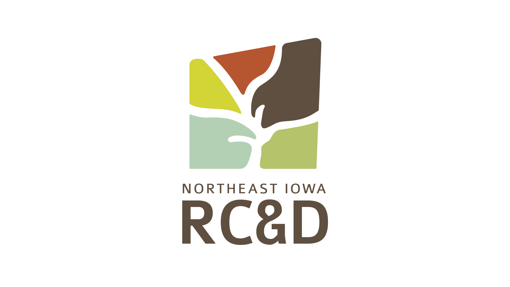
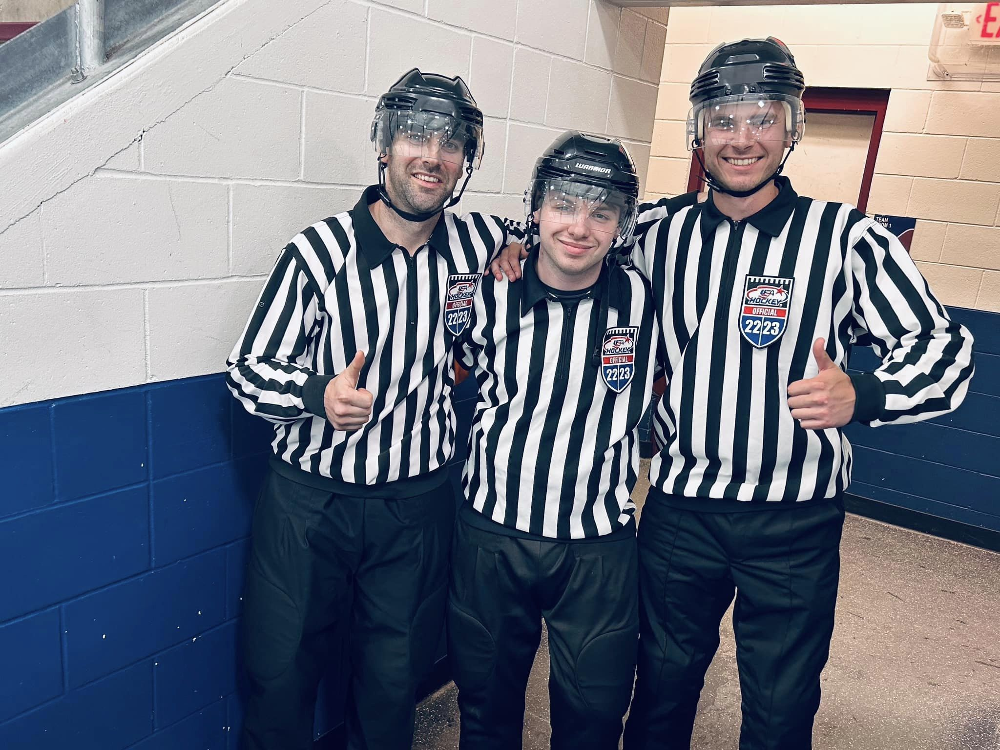

About Me
 My name is Hans Larson, and I’m a Marketing Specialist at Eastern Carver County Schools. I recently returned to the Twin Cities to be closer to family, friends, and the hockey community I’ve become deeply involved in through officiating.
My name is Hans Larson, and I’m a Marketing Specialist at Eastern Carver County Schools. I recently returned to the Twin Cities to be closer to family, friends, and the hockey community I’ve become deeply involved in through officiating.
I grew up in Stillwater, Minnesota, and have always been passionate about creativity, technology, and community. I earned my bachelor’s degree in Data Science from Luther College, with minors in Computer Science and Visual Communication. During my time there, I developed a strong interest in Geographic Information Systems (GIS), which led to an internship at Northeast Iowa RC&D, where I worked on natural resource mapping and data visualization projects.


As the Marketing Specialist for Eastern Carver County Schools Community Education, I create marketing campaigns that help connect our community with programs for all ages. My work includes graphic design, photography, videography, animation, social media, print publications, digital content, and using data analysis to better understand our audience and improve outreach.
One of the projects I'm most proud of is developing Skylar the Stormhawk. What started as a simple logo became a recognizable mascot with a name, personality, and voice. I created animated videos, branded intros, and social media content that brought Skylar to life and helped make Community Education more fun, welcoming, and memorable.
I enjoy blending creativity with data to tell better stories, build stronger brands, and create experiences that people genuinely connect with.